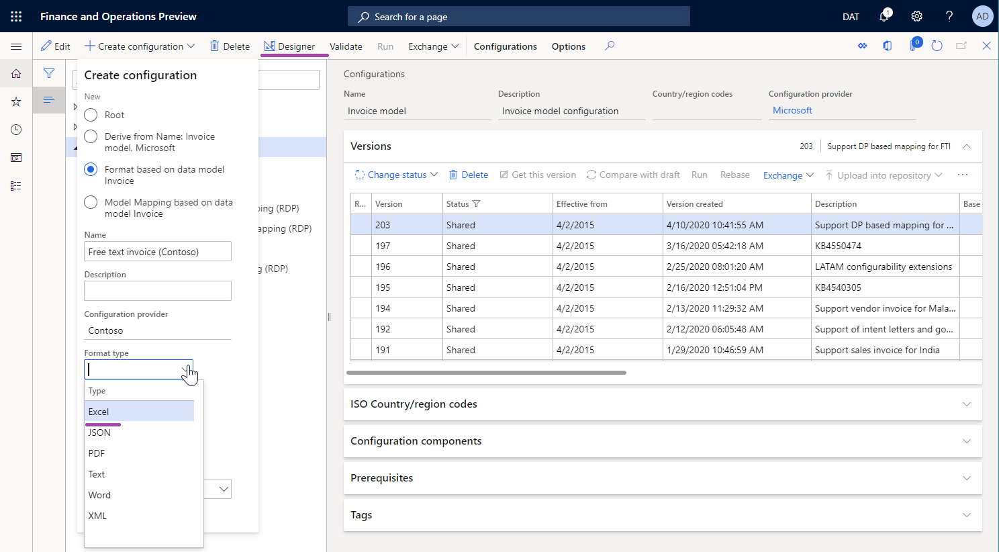
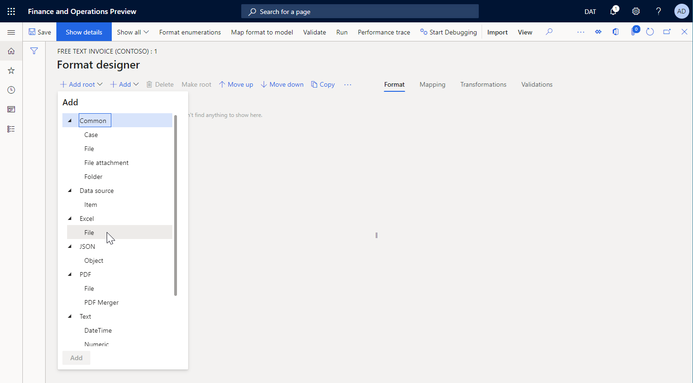
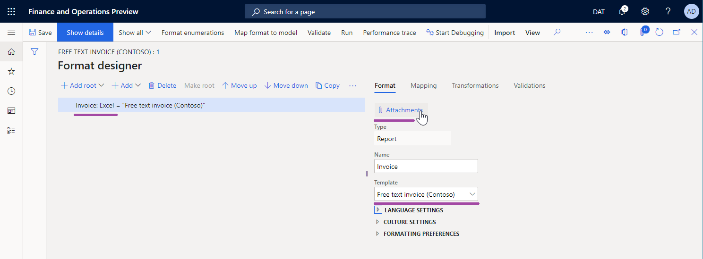
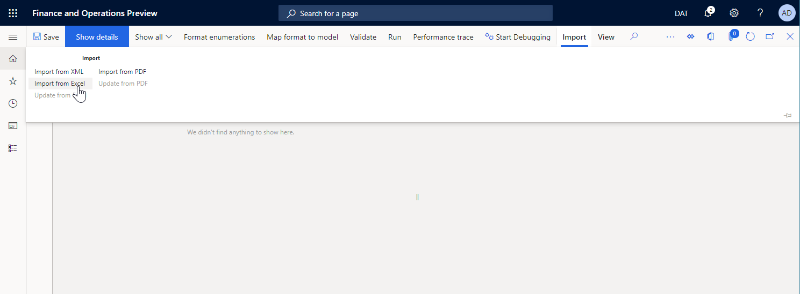
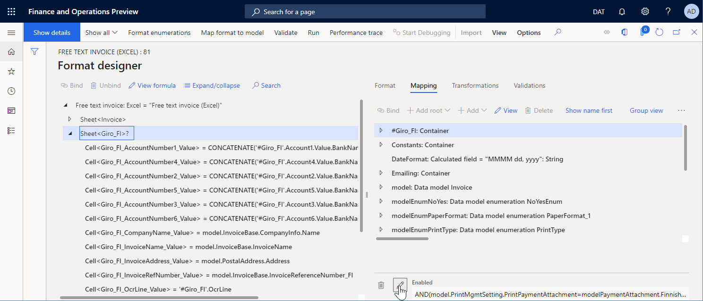

Eine Konfiguration zur Generierung von Dokumenten im Excel-Format entwerfen
[!include[banner](../includes/banner.md)]Sie können eine Formatkonfiguration für die elektronische Berichtersterstellung (EB) mit einer EB-Formatkomponente entwerfen, die Sie konfigurieren können, um ein ausgehendes Dokument in einem Microsoft Excel-Arbeitsmappenformat zu generieren. Zu diesem Zweck müssen bestimmte Komponenten des EB-Formats verwendet werden.
Führen Sie die folgenden Schritte im Thema Konfiguration zum Generieren von Berichten im OPENXML-Format entwerfen aus, um weitere Informationen zu dieser Funktion zu erhalten.
Neues ER-Format hinzufügen
Wenn Sie eine neue EB-Formatkonfiguration hinzufügen, um ein ausgehendes Dokument in einem Excel-Arbeitsmappenformat zu generieren, müssen Sie den Excel-Wert das Attribut Formattyp des Formats auswählen oder das Attribut Formattyp leer lassen.
- Wenn Sie Excel auswählen, können Sie das Format so konfigurieren, dass ein ausgehendes Dokument nur im Excel-Format generiert wird.
- Wenn Sie das Attribut leer lassen, können Sie das Format so konfigurieren, dass ein ausgehendes Dokument in einem beliebigen Format generiert wird, das vom EB-Framework unterstützt wird.
Wählen Sie im Aktionsbereich Designer aus, und öffnen Sie die EB-Formatkomponente zur Bearbeitung im EB-Vorgangs-Designer aus, um die EB-Formatkomponente der Konfiguration zu konfigurieren.

Komponente „Excel-Datei“
Manuelle Eingabe
Sie müssen dem konfigurierten EB-Format eine Excel\Datei-Komponente hinzufügen, um ein ausgehendes Dokument im Excel-Format zu generieren.

Hängen Sie eine Excel-Arbeitsmappe mit der .xlsx-Erweiterung als Vorlage für ausgehende Dokumente an die Excel\Datei-Komponente an, um das Layout des ausgehenden Dokuments festzulegen.
Note
Wenn Sie eine Vorlage manuell anhängen, müssen Sie einen Dokumententyp verwenden, der zu diesem Zweck im EB-Parameter (This is an external link) konfiguriert wurde.

Wenn Sie das konfigurierte ER-Format ausführen, müssen Sie der Excel\Datei-Komponente die Komponenten Blatt-, Angebot und Zelle hinzufügen, um festzulegen, wie die angehängte Vorlage ausgefüllt wird. Jede verschachtelte Komponente muss mit einem Excel-benannten Element verknüpft sein.
Vorlagenimport
Sie können auf der Registerkarte Importieren des Aktionsbereichs die Option Aus Excel importieren auswählen, um eine neue Vorlage in ein leeres EB-Format zu importieren. In diesem Beispiel wird automatisch eine Excel\Datei-Komponente erstellt und die importierte Vorlage daran angehängt. Alle erforderlichen EB-Komponenten werden ebenfalls automatisch erstellt, basierend auf der Liste der erkannten Excel-benannten Elemente.

Note
Wenn Sie das optionale Blatt-Element im bearbeitbaren EB-Format erstellen möchten, legen Sie die Option Excel-Arbeitsblattformat-Element erstellen auf Ja fest.
Komponente „Blatt“
Die Blatt-Komponente gibt ein Arbeitsblatt der angehängten Excel-Arbeitsmappe an, das ausgefüllt werden muss. Der Name des Arbeitsblatts in einer Excel-Vorlage ist in der Blatt-Eigenschaft dieser Komponente definiert.
Note
Diese Komponente ist für Excel-Arbeitsmappen, die ein einzelnes Arbeitsblatt enthalten, optional.
Auf der Registerkarte Zuordnung des EB-Vorgangs-Designers können Sie die Eigenschaft Aktiviert für eine Blatt-Komponente konfigurieren, um anzugeben, ob die Komponente in ein generiertes Dokument eingefügt werden muss:
- Wenn ein Ausdruck der Eigenschaft Aktiviert für die Rückgabe von Wahr zur Laufzeit oder wenn überhaupt kein Ausdruck konfiguriert ist, wird das entsprechende Arbeitsblatt im generierten Dokument ausgefüllt.
- Wenn ein Ausdruck der Eigenschaft Aktiviert ist für die Rückgabe von Falsch zur Laufzeit konfiguriert ist, enthält das generierte Dokument kein Arbeitsblatt.

Komponente „Bereich“
Die Komponente Bereich gibt einen Excel-Bereich an, der von dieser EB-Komponente gesteuert werden muss. Der Name des Bereichs ist in der Eigenschaft Excel-Bereich dieser Komponente definiert.
Die Eigenschaft Replikationsrichtung gibt an, ob und wie der Bereich in einem generierten Dokument wiederholt wird:
- Wenn die Eigenschaft Replikationsrichtung auf Keine Replikation festgelegt ist, wird der entsprechende Excel-Bereich nicht im generierten Dokument wiederholt.
- Wenn die Eigenschaft Replikationsrichtung auf Vertikal festgelegt ist, wird der entsprechende Excel-Bereich im generierten Dokument wiederholt. Jeder replizierte Bereich wird in einer Excel-Vorlage unter den ursprünglichen Bereich eingefügt. Die Anzahl der Wiederholungen wird durch die Anzahl der Datensätze in einer Datenquelle des Typs Datensatzliste definiert, der an diese EB-Komponente gebunden ist.
- Wenn die Eigenschaft Replikationsrichtung auf Horizontal festgelegt ist, wird der entsprechende Excel-Bereich im generierten Dokument wiederholt. Jeder replizierte Bereich wird in einer Excel-Vorlage rechts neben dem ursprünglichen Bereich eingefügt. Die Anzahl der Wiederholungen wird durch die Anzahl der Datensätze in einer Datenquelle des Typs Datensatzliste definiert, der an diese EB-Komponente gebunden ist.
Führen Sie die Schritte unter Horizontal erweiterbare Bereiche verwenden, um Spalten in Excel-Berichten dynamisch hinzuzufügen aus, um weitere Informationen zu erhalten.
Die Komponente Bereich kann andere verschachtelte EB-Komponenten aufweisen, die zur Eingabe von Werten in die entsprechenden benannten Excel-Bereiche verwendet werden.
Wenn eine Komponente der Gruppe Text für die Eingabe von Werten verwendet wird, erfolgt die Eingabe des Werts in einem Excel-Bereich als Textwert.
Note
Verwenden Sie dieses Muster, um eingegebene Werte basierend auf dem in der Anwendung definierten Gebietsschema zu formatieren.
Wenn die Komponente Zelle der Gruppe Excel verwendet wird, um Werte einzugeben, wird der Wert in einem Excel-Bereich als Wert des Datentyps eingegeben, der durch die Bindung dieser Komponente Zelle (z. B. Zeichenfolge, Gleitkommazahl, oder Ganzzahl) definiert ist.
Note
Verwenden Sie dieses Muster, damit die Excel-Anwendung eingegebene Werte basierend auf dem Gebietsschema des lokalen Computers formatieren kann, der das ausgehende Dokument öffnet.
Auf der Registerkarte Zuordnung des EB-Vorgangs-Designers können Sie die Eigenschaft Aktiviert für eine Bereich-Komponente konfigurieren, um anzugeben, ob die Komponente in ein generiertes Dokument eingefügt werden muss:
- Wenn ein Ausdruck der Eigenschaft Aktiviert für die Rückgabe von Wahr zur Laufzeit oder wenn überhaupt kein Ausdruck konfiguriert ist, wird der entsprechende Bereich im generierten Dokument ausgefüllt.
- Wenn ein Ausdruck der Eigenschaft Aktiviert für die Rückgabe von Falsch zur Laufzeit konfiguriert ist und dieser Bereich nicht sämtliche Zeilen oder Spalten darstellt, wird der entsprechende Bereich nicht im generierten Dokument ausgefüllt.
- Wenn ein Ausdruck der Eigenschaft Aktiviert für die Rückgabe von Falsch zur Laufzeit konfiguriert ist und dieser Bereich sämtliche Zeilen oder Spalten darstellt, enthält das Dokument diese Zeilen und Spalten als ausgeblendete Zeilen und Spalten.
Komponente „Zelle“
Die Komponente Zelle wird verwendet, um Excel-benannte Zellen, Formen und Bilder auszufüllen. Wenn Sie ein Excel-benannte Objekt, das von einer EB-Komponente vom Typ Zelle ausgefüllt werden muss, angeben möchten, müssen Sie den Namen dieses Objekts in der Eigenschaft Excel-Bereich der Komponente Zelle festlegen.
Auf der Registerkarte Zuordnung des EB-Vorgangs-Designers können Sie die Eigenschaft Aktiviert für eine Bereich-Komponente konfigurieren, um festzulegen, ob das Objekt in einem generierten Dokument ausgefüllt werden muss:
- Wenn ein Ausdruck der Eigenschaft Aktiviert für die Rückgabe von Wahr zur Laufzeit oder wenn überhaupt kein Ausdruck konfiguriert ist, wird das entsprechende Objekt im generierten Dokument ausgefüllt. Die Bindung dieser Komponente vom Typ Zelle gibt einen Wert an, der in das entsprechende Objekt eingefügt wird.
- Wenn ein Ausdruck der Eigenschaft Aktiviert für die Rückgabe von Falsch zur Laufzeit konfiguriert ist, wird das entsprechende Objekt nicht im generierten Dokument ausgefüllt.
Wenn eine Komponente vom Typ Zelle für die Eingabe eines Werts in eine Zelle konfiguriert ist, kann sie an eine Datenquelle gebunden werden, die den Wert eines primitiven Datentyps zurückgibt (z. B. Zeichenfolge, Gleitkommazahl oder Ganzzahl). In diesem Fall wird der Wert als Wert desselben Datentyps in die Zelle eingegeben.
Wenn eine Komponente vom Typ Zelle für die Eingabe eines Werts in ein Excel-Shape konfiguriert ist, kann sie an eine Datenquelle gebunden werden, die einen Wert eines primitiven Datentyps zurückgibt (z. B. Zeichenfolge, Gleitkommazahl oder Ganzzahl). In diesem Fall wird der Wert als Text dieses Shapes in das Excel-Shape eingegeben. Für Werte von anderen Datentypen als Zeichenfolge erfolgt die Konvertierung in Text automatisch.
Note
Sie können eine Komponente vom Typ Zelle so konfigurieren, dass ein Shape nur in den Fällen ausgefüllt wird, in denen eine Shape-Text-Eigenschaft unterstützt wird.
Wenn eine Komponente vom Typ Zelle für die Eingabe eines Werts in ein Excel-Bild konfiguriert ist, kann sie an eine Datenquelle gebunden werden, die einen Wert des Datentyps Container zurückgibt, der ein Bild im Binärformat darstellt. In diesem Fall wird der Wert als Bild in das Excel-Bild eingegeben.
Note
Jedes Excel-Bild und -Shape gilt als durch die obere linke Ecke in einer bestimmten Excel-Zelle oder einem bestimmten Excel-Bereich verankert. Wenn Sie ein Excel-Bild oder Excel-Shape replizieren möchten, müssen Sie die Zelle oder den Bereich, in dem es verankert ist, als replizierte Zelle oder Bereich konfigurieren.
Weitere Informationen zum Einbetten von Bildern und Shapes finden Sie unter Bilder und Shapes in Dokumente einbetten, die mit EB generiert werden (This is an external link).
Komponente „Seitenumbruch“
Die Komponente PageBreak erzwingt das Starten einer neuen Seite in Excel. Diese Komponente ist nicht erforderlich, wenn Sie das Standard-Paging von Excel verwenden möchten, aber Sie sollten sie verwenden, wenn Sie möchten, dass Excel Ihrem ER-Format folgt, um das Paging zu strukturieren.
Hinzugefügtes EB-Format bearbeiten
Vorlage aktualisieren
Sie können auf der Registerkarte Importieren des Aktionsbereichs die Option Aus Excel importieren auswählen, um eine aktualisierte Vorlage in ein bearbeitbares EB-Format zu importieren. Während dieses Vorgangs wird eine Vorlage der ausgewählten Excel\Datei-Komponente durch eine neue Vorlage ersetzt. Der Inhalt des bearbeitbaren EB-Formats wird mit dem Inhalt der aktualisierten EB-Vorlage synchronisiert.
- Für jeden Excel-Namen wird automatisch eine neue EB-Format-Komponente erstellt, wenn die EB-Format-Komponente nicht im bearbeitbaren Format gefunden wird.
- Jede EB-Format-Komponente wird aus dem bearbeitbaren EB-Format gelöscht, wenn kein entsprechender Excel-Name dafür gefunden wird.
Note
Legen Sie die Option Excel-Arbeitsblattformat-Element erstellen auf Ja fest, wenn Sie das optionale Blatt-Element im bearbeitbaren EB-Format erstellen möchten.
Wenn das bearbeitbare EB-Format ursprünglich Blatt-Elemente enthielt, wird empfohlen, dass Sie die Option Excel-Arbeitsblattformat-Element erstellen auf Ja festlegen, wenn Sie eine aktualisierte Vorlage importieren. Anderfalls werden alle verschachtelten Elemente des ursprünglichen Blatt-Elements von Grund auf neu erstellt. Daher gehen alle Bindungen der neu erstellten Formatelemente im aktualisierten EB-Format verloren.

Führen Sie die Schritte unter Elektronische Berichterstellungsformate ändern, indem Microsoft Excel-Vorlagen erneut angewendet werden, um weitere Informationen zu dieser Funktion zu erhalten.
EB-Format überprüfen
Wenn Sie ein bearbeitbares EB-Format überprüfen, wird eine Konsistenzprüfung durchgeführt, um sicherzustellen, dass der Excel-Name in der aktuell verwendeten Excel-Vorlage vorhanden ist. Sie werden über etwaige Inkonsistenzen informiert. Bei einigen Inkonsistenzen ist die Option zur automatischen Behebung von Problemen verfügbar.

Berechnung von Excel-Formeln steuern
Wenn ein ausgehendes Dokument in einem Microsoft Excel-Arbeitsmappenformat generiert wird, enthalten einige Zellen dieses Dokuments möglicherweise Excel-Formeln. Wenn die Funktion Aktivieren Sie die Verwendung der EPPlus-Bibliothek im Rahmen für elektronische Berichte aktiviert ist, können Sie steuern, wann die Formeln berechnet werden, indem Sie den Wert des Parameters Berechnungsoptionen in der verwendeten Excel-Vorlage ändern:
- Wählen Sie Automatisch aus, um alle abhängigen Formeln jedes Mal neu zu berechnen, wenn ein generiertes Dokument an neue Bereiche, Zellen usw. angehängt wird.
Note
Dies kann zu Leistungsproblemen bei Excel-Vorlagen führen, die mehrere verwandte Formeln enthalten.
- Wählen Sie Manuell aus, um eine Neuberechnung der Formel beim Generieren eines Dokuments zu vermeiden.
Note
Die Neuberechnung der Formel wird manuell erzwungen, wenn ein generiertes Dokument in Excel zur Vorschau geöffnet wird. Verwenden Sie diese Option nicht, wenn Sie ein EB-Ziel konfigurieren, das die Verwendung eines generierten Dokuments ohne Vorschau in Excel (PDF-Konvertierung, E-Mail usw.) voraussetzt, da das generierte Dokument möglicherweise keine Werte in Zellen enthält, die Formeln enthalten.
Zusätzliche Ressourcen
Überblick über die elektronische Berichterstellung
Entwerfen einer Konfiguration für das Erstellen von Berichten im OPENXML-Format
Ändern von elektronisches Berichterstellungsformaten, indem Excel-Vorlagen erneut angewendet werden
Horizontal erweiterbare Bereiche zum dynamischen Hinzufügen von Spalten in Excel-Berichten verwenden
Konfigurieren Sie die elektronische Berichterstattung (ER), um Daten in Power BI zu ziehen.